Build your own AI workflow for software work
Bachata is a VS Code extension that lets AI assistants work together in steps you arrange: one plans, another challenges, they review and revise, and you decide what matters.
Overview
What Bachata is
An AI assistant is a tool you ask, in everyday language, to help with tasks such as planning a feature, writing code, or finding bugs. Bachata runs inside Visual Studio Code and coordinates assistants you already have, such as Codex and Claude Code.
You arrange the work as a pipeline: a sequence of steps, each with a role, instructions, and the assistant that performs it. For example, two reviewers read the code independently, then challenge each other's findings until they agree or hand the disagreement to you.
Shape the workflow
Roles, instructions, step order and review rounds.
Choose who does the work
Assign Codex, Claude Code or a browser chat to each role.
Reuse and adapt
Start from a built-in pipeline, edit it, or create your own.
Follow the result
Findings, decisions and changes, with the checks that actually ran.
Bachata does not include an AI service or subscription. It never creates a Git commit. AI can make mistakes even when assistants agree, and a finished run is not proof that the code is correct.
Requirements
- VS Code 1.101.0 or newer.
- A local Git repository, opened in a trusted VS Code window. Git 2.32 or newer.
- Codex or Claude Code, installed and signed in separately. Install both if you want two assistants to cross-check each other.
- Optional: the Browser Bridge Chrome extension, to use ChatGPT, Claude or another chat website as a participant.
Get started
Install
- In VS Code, open the Command Palette and run Extensions: Install from VSIX…, then select the Bachata
.vsixfile. - Open a trusted Git repository in a local VS Code window.
- Install and sign in to Codex or Claude Code using their own CLI login flow.
Bachata adds a Bachata icon to the Activity Bar and a Get started with Bachata walkthrough to the VS Code Welcome page.
Check readiness with Doctor
Run Bachata: Doctor. Doctor separates blockers for the selected pipeline from optional providers that are unavailable, and each failing check offers direct actions and a targeted recheck.
- Codex is probed with an app-server handshake. No thread is created and no model is called.
- Claude Code is probed with
claude --version. - Probes run in the workspace root with a restricted environment. A CLI that exists only in your interactive shell
PATHis invisible: setbachata.codexCommandorbachata.claudeCommandto its absolute path.
Run a first review
- Run Bachata: Setup. Choose Review code. The default journey also offers Plan change and Fix bug; TODO orchestration, browser providers and custom pipelines are under Advanced workflows.
- Choose Fast single agent (one provider does the work) or Cross-checked pair (two participants work separately and cross-check one pass). Setup lists the ready providers and what a missing one needs.
- Describe what you want reviewed in the composer. You can also start from the editor: Bachata: Review File, Review Selection, Review Uncommitted Changes and similar commands prepare a draft without sending it.
- Open the run settings and read the run contract: what the run may read and write, which providers take part, and which checks run.
- Send. When the run finishes, open the result.
{kind=link}
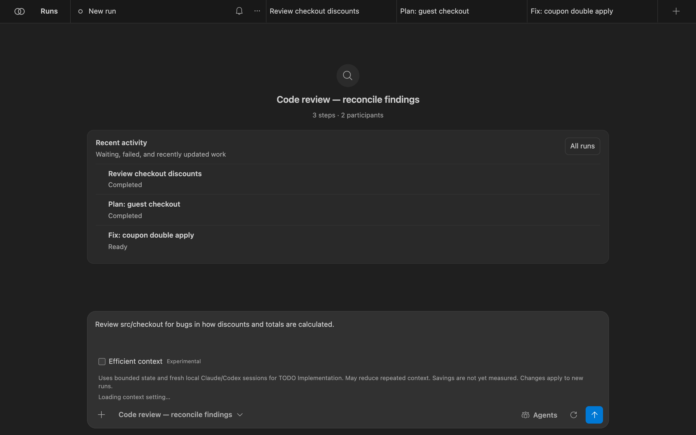
Use Bachata
The Bachata panel
Open it with Bachata: Open or the Activity Bar icon. Each run is a tab across the top. A run has three views:
- Chat: your request and each participant's answers, in order.
- Execution: pipeline steps with their status, and the run result.
- Direction: the project goal, decisions waiting for you, and accepted findings still to fix, across runs.
{kind=link}
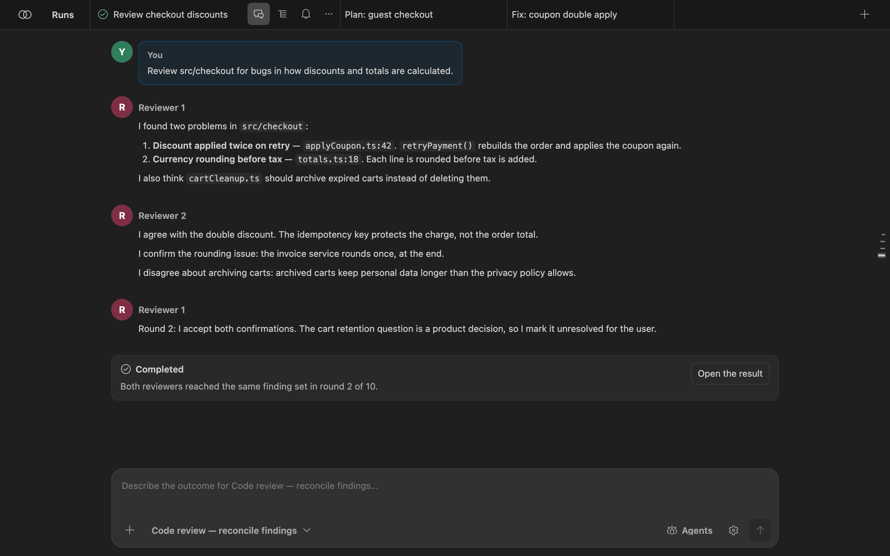
Runs opens the run drawer: search runs and prompts, show archived runs, and open Direction. Each run's … menu renames, duplicates, archives or deletes it.
{kind=link}
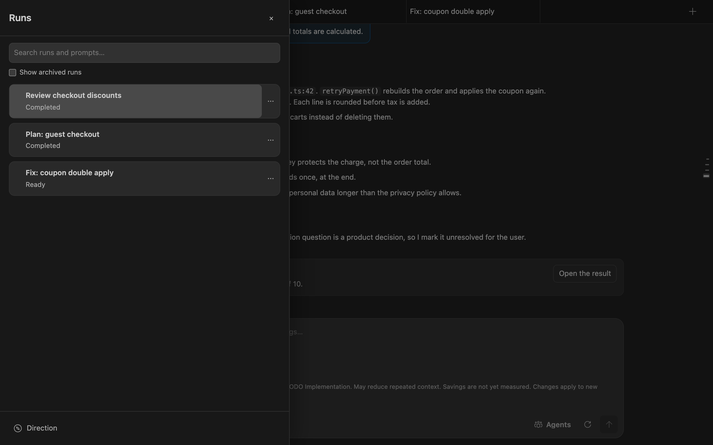
Choose a pipeline
The pipeline picker sits under the composer. Search covers names, IDs, descriptions and participant roles. Filters separate common, specialized and internal workflows; custom pipelines add Custom and All. The picker chooses the work; Agents chooses the providers.
{kind=link}
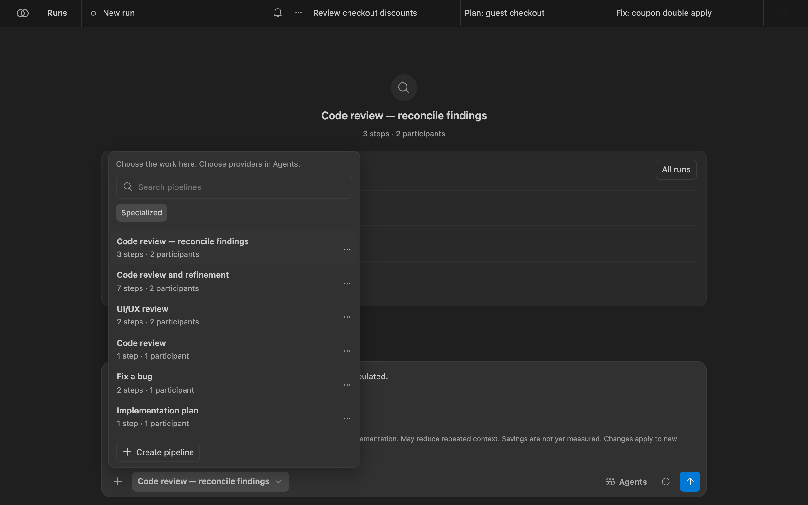
Each step in a pipeline is one of:
agent: one or more participants take a turn, optionally in parallel or until they reach consensus;assignRoles: bind roles you defined to agents;checklist: turn accepted findings into strict issues;executeChecklist: run the selected issues through the controller. It must be the last enabled step.
Consensus rounds are bounded. When the round limit is reached, the pipeline states what happens: a human decision, failure, or a Lead ruling. Agreement selects one run's output; it does not prove the output is true. See the built-in pipeline list.
Assign agents
Agents lists every role the selected pipeline needs. For each role, pick the provider and, where the provider reports one, the model. Changes apply to this run and are marked as reassigned; Reset to defaults restores the pipeline's own choices.
{kind=link}
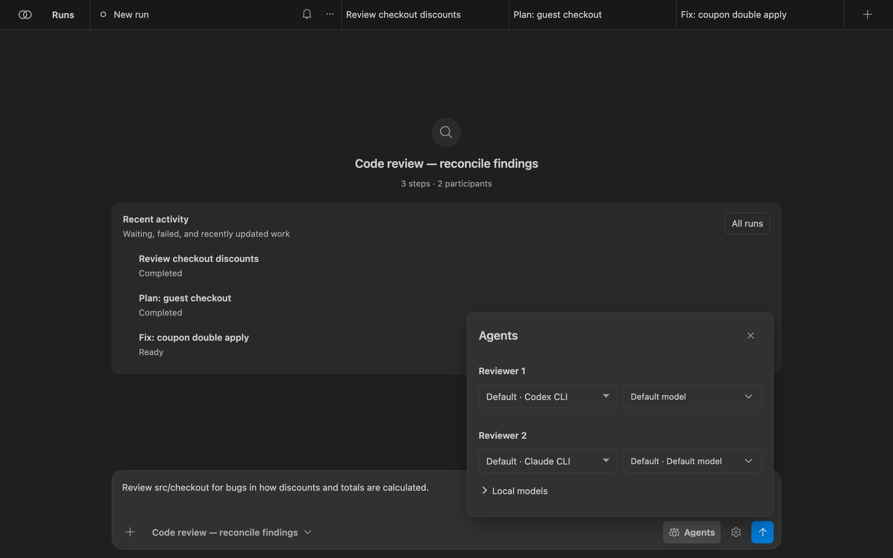
Bachata ships no model catalog. When Codex can list its models, Bachata shows that list and refuses a model the installed Codex does not offer. When a provider cannot list models, the name you type is sent as written. Bachata never switches the provider or model for you. To stop a provider from ever running, add it to bachata.disabledProviders.
Read the run contract
The gear button next to Send opens Run settings. Run options (iterations, fixed or until-clean mode, delivery) apply to this run only. Run details is the contract Bachata resolved for this exact run:
- Assurance: what kind of result this run can produce, for example Read-only;
- Providers and their readiness;
- Scope and commits: working directory, writable, readable and protected paths. Bachata never creates commits;
- Verification: which controller checks run, if any;
- Run limits, Human decisions, Fallback, Completion;
- What each provider receives: the outbound context, exclusions and redactions per provider.

If anything blocks the run, such as a provider that is not ready or a repository policy that refuses it, the contract lists it and Send stays disabled until it is resolved.
Read the result
Open Execution (the list icon on the run tab) or select Open the result in Chat. The top lists each pipeline step and its status. The bottom bar shows how many findings are selected and offers the next pipeline.
{kind=link}
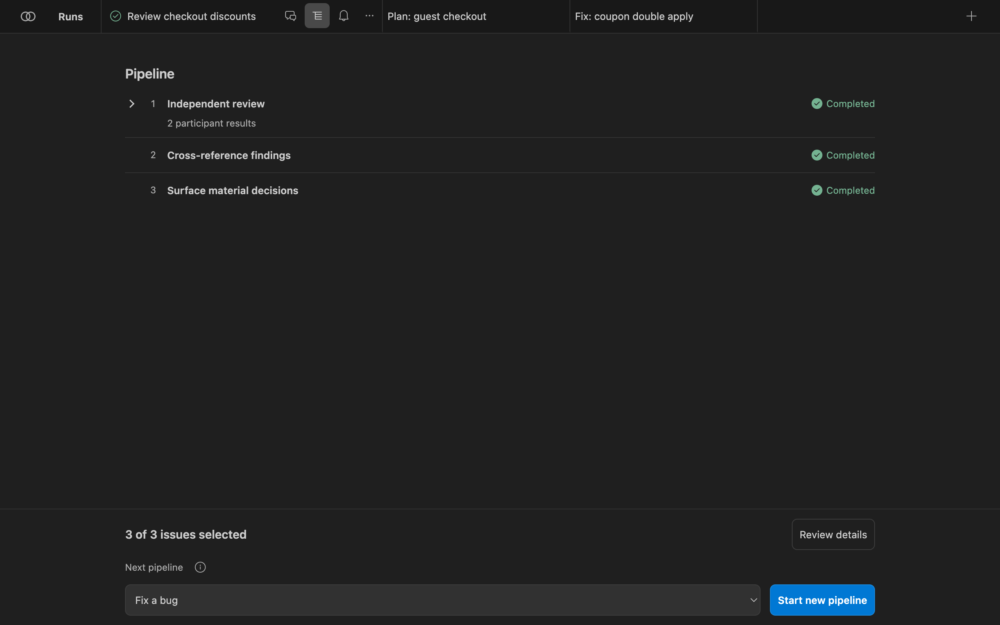
Review details opens the run result:
- Assessment, for example Completed · model-reviewed · unverified. It describes how this run concluded, not whether the software is correct.
- Final ruling and who produced it, for example unanimous consensus of both reviewers.
- Findings, split into converged findings (accepted after challenge) and findings not converged that need your confirmation. Each has its location, evidence and the challenges raised against it.
- Assessment details: unresolved risks, evidence gaps, and the evidence ledger (changed files, checks, ruling provenance).
![Run result: Completed · model-reviewed · unverified. 'Review the findings below. This run has nothing to apply.' Final ruling: two findings accepted after challenge, one disagreement needs your decision, by unanimous consensus of Reviewer 1 (codex-app-server) and Reviewer 2 (claude-code). Findings: 2 actionable, 1 needs human. Converged findings: 'Discount applied twice on retry' at src/checkout/applyCoupon.ts:42 and 'Currency rounding before tax' at src/checkout/totals.ts:18, each with evidence and challenges.](img/result-center.png)
Copy result copies a readable summary. More publishes findings to the Problems panel, opens Source Control, and exports the run as a JSON bundle, a Markdown evidence report or SARIF findings. Exports carry no provider conversation URL or session identifier.
Direction view
Direction keeps what matters across runs, so you do not have to read transcripts. Open it from the bottom of the run drawer. It shows the goal, the next useful action, and what needs you:
- Decisions to resolve: questions a pipeline raised that change direction, with trade-offs and evidence;
- Findings to resolve: findings the participants did not converge on;
- Accepted findings to fix, the accepted direction and acceptance criteria, review progress, artifacts, and repository checks.
{kind=link}
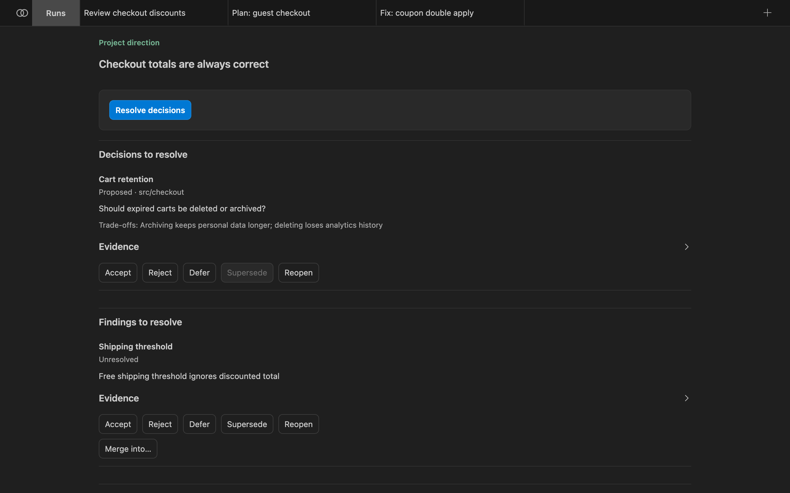
Resolutions you can record, where the item's state allows them:
| Resolution | Meaning |
|---|---|
| Accept | This is real and Bachata should act on it. |
| Reject | Not real. It leaves the active surface and stays in history. |
| Defer | Real, but not now. |
| Supersede | An existing later record replaces this one. |
| Reopen | A closed item is live again. Requires a written reason and new material evidence. |
You do not need to accept a finding the pipeline already accepted after more than one participant challenged it. You supervise by exception. Nothing is deleted; resolved items move to history.
Fix and apply
A read-only review produces nothing to apply. A fix run produces the change. On an accepted finding, select Fix finding in Direction, or pick a write-capable pipeline such as Fix a bug as the next pipeline in Execution.
{kind=link}
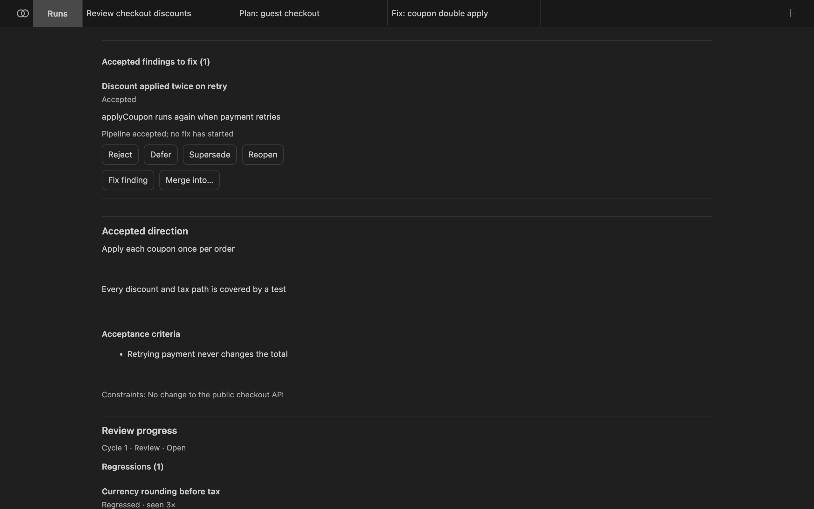
The fix run gets a prompt scoped to that one finding: subject, location, evidence and the challenges raised. Bachata picks the fix pipeline from bachata.fixPipelineId, then the pipeline selected in the source run, then the built-in managed-fix. A read-only pipeline is refused.
Applying retained work
Some workflows change the selected folder directly; isolated ones keep changes in a separate Git worktree until you apply them. The run contract says which applies. When you apply:
- Bachata stages the work in your working tree on your current branch and creates no commit. You review it in Source Control and commit it yourself.
- Apply is refused when verification is stale, failed or cancelled. Applying an inconclusive run is an explicit override.
- Applying a subset reruns the run's checks against exactly the bytes you selected.
Fresh review rounds
A fresh review starts an independent review of the current repository state. Provider sessions are reset and no prior conclusion is carried into the prompts. Prior findings are used for comparison after the review, never before it.
When a second round lands in the same review cycle, Direction reports what changed: new, repeated, resolved and regressed findings, findings reopened on new evidence, and decision changes. Finding identity does not depend on wording, so a paraphrased repeat is one finding with two occurrences.
Bachata reports saturation only when several consecutive fresh reviews added nothing material, accepted findings are resolved, core decisions are closed and required checks are current. Saturation means repeated review stopped finding material issues. It is not a correctness proof.
A fresh review only runs a read-only pipeline that produces findings. Set bachata.freshReviewPipelineId to choose one when the selected pipeline does not qualify.
Edit pipelines
In Run settings, choose Edit pipeline, New pipeline or Fork selected. Editing a built-in pipeline creates a copy. The editor has a Structured form and a JSON mode for exact definitions. Steps can be reordered, duplicated and disabled; Guardrails, Agents and Roles are separate sections.
{kind=link}
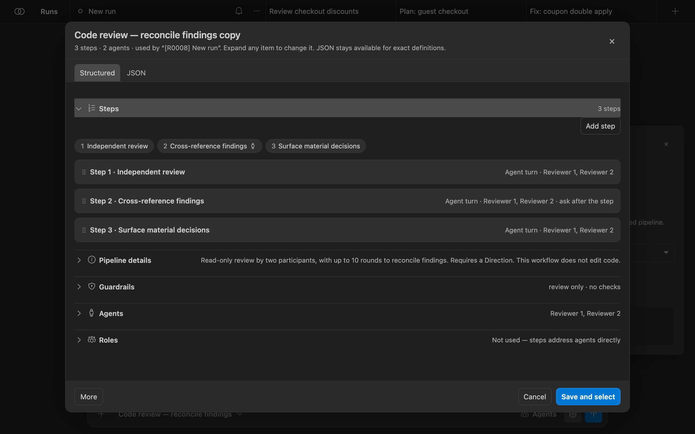
Turn on bachata.advancedMode to show the full editor: roles, consensus, typed outputs, human gates, capabilities, permission modes, approval policies, prompt templates and path policies. Pipelines can be exported and imported as JSON (pipeline JSON version 1). Runs keep the exact pipeline snapshot they started with.
Browser Bridge
Use your browser chats from Bachata
Bachata Browser Bridge is a separate Chrome extension. It connects Bachata in VS Code to AI chat websites such as ChatGPT and Claude, so a conversation in your browser can be a participant in a pipeline. When a browser step runs, the Bridge sends the message to the chat you connected and brings the reply back to VS Code.
You only need it for browser participants. Codex and Claude Code do not use it.
Requirements
- Chrome 116 or newer.
- A local VS Code window with Bachata. Remote SSH, WSL and Codespaces cannot reach a local browser.
- A Bridge build whose protocol version matches your Bachata build. A mismatch is refused, not degraded: upgrade both together.
- A signed-in ChatGPT or Claude tab, or another chat website you set up yourself.
Install the Bridge
- Download the ZIP from the official releases page. An empty page means no official download is available yet. Do not install a Bridge build from any other source.
- Compare its SHA-256 with the checksum published next to the release:
shasum -a 256 bachata-browser-bridge-<version>.zip - Unzip it to a folder you will keep. Chrome loads unpacked extensions from disk on every start.
- Open
chrome://extensions, turn on Developer mode, choose Load unpacked and select the unzipped folder.
Building from source: run npm ci and npm run build in the Bridge repository, then load the built dist/ folder. Loading the repository root fails by design.
Pair with VS Code
- In Bachata, open Agents and assign Browser Bridge to a role. A Bridge status chip appears at the top of Agents; when the Bridge is not paired it reads Pair Bridge. Select it.
- Select Copy pairing token. Find browser starts discovery again; Reset pairing issues a new token.
- Open the Bridge popup in Chrome and select Paste & connect. If you type or paste the token into the field yourself, select Connect to VS Code instead.
{kind=link}
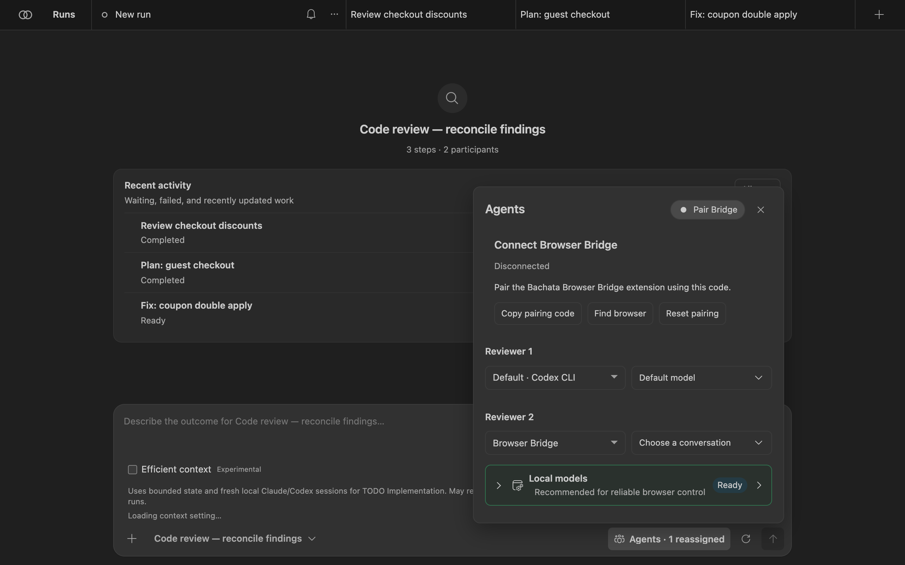
{kind=link}
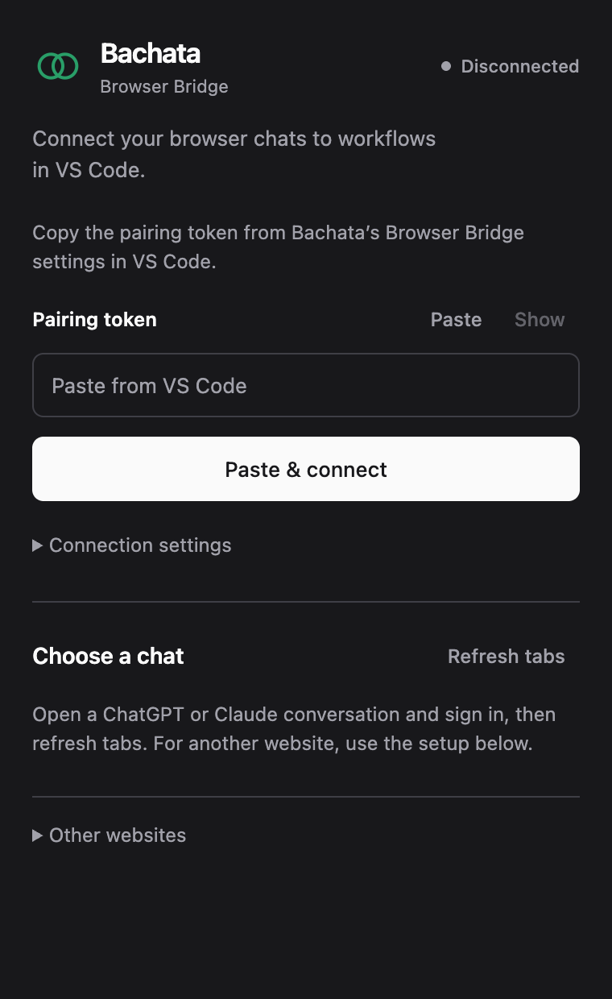
The local address is filled in automatically. Open Connection settings only if VS Code shows a different address. The Bridge keeps one connection, so only one VS Code window per user profile owns the Bridge at a time; other windows can still use Codex and Claude Code.
Choose a chat
- Open a ChatGPT or Claude conversation and sign in.
- In the popup, select Refresh tabs. Each row shows the provider, title, readiness and any limitations. Details shows the tab and conversation identity.
- Select Use this chat on a ready conversation. Only ready rows offer it, and only while connected.
- In Bachata's Agents, choose that conversation for the browser role.
{kind=link}
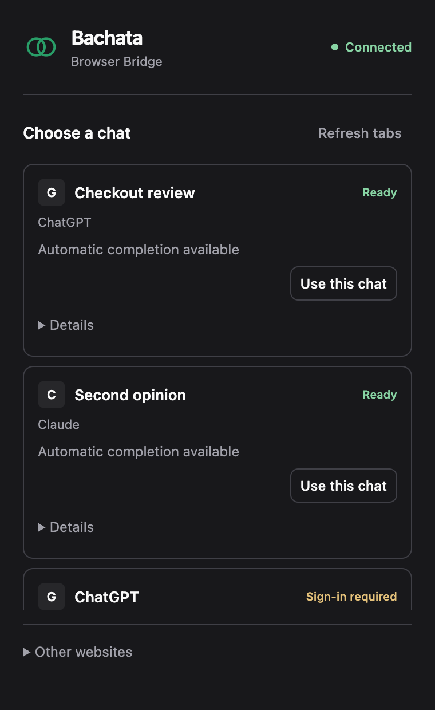
{kind=link}
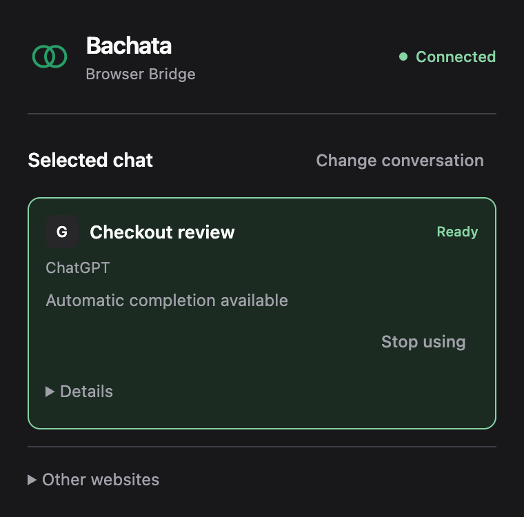
{kind=link}
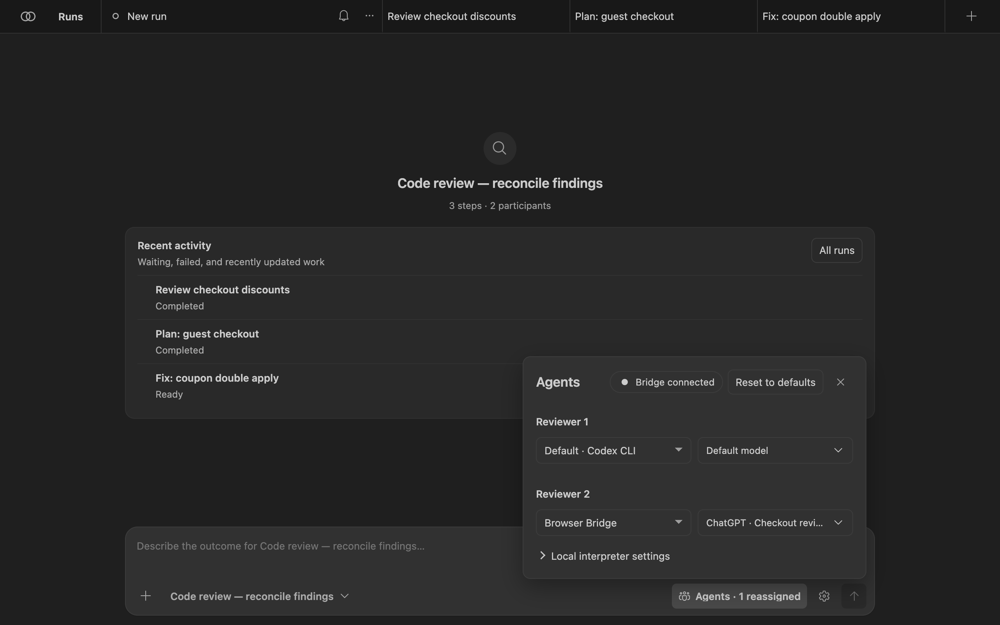
The binding survives popup closes and browser worker restarts. You need to bind again only when the tab is closed, navigates to another site, or its conversation is changed by hand.
Other chat websites
For a website other than ChatGPT and Claude, open Other websites in the popup and choose Set up current website, then allow the displayed origin. Close the popup and use the setup panel on the page: auto-detect or pick the controls (composer and conversation region are required; send, stop and new-conversation controls are optional), then validate. Validation does not send a chat message.
{kind=link}
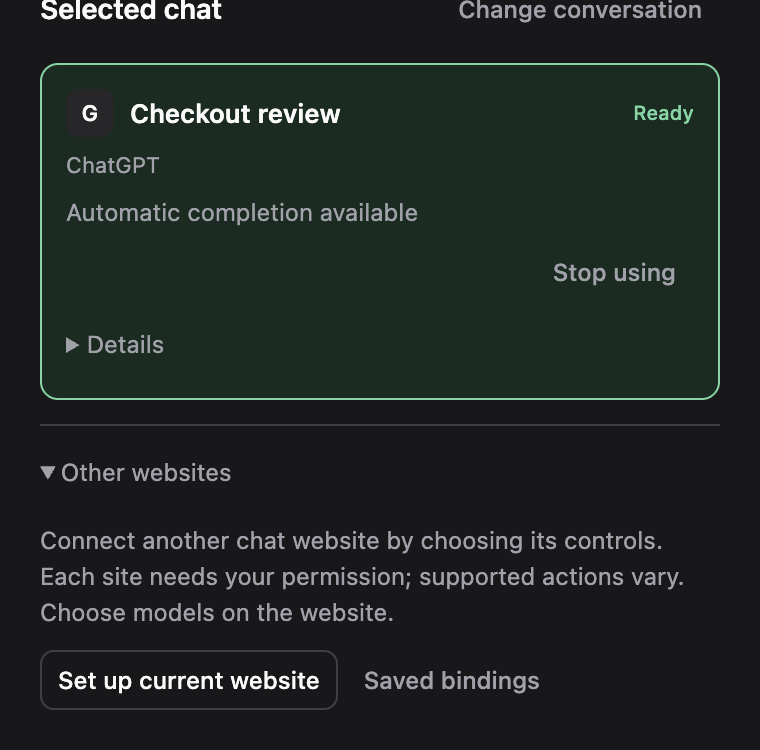
Other websites receive text only; images and downloadable assets are not supported. A site without verified Send and Stop controls works for manual workflows but not for unattended managed runs. Sites you have not bound are never discovered, and the Bridge never opens such a tab for you.
Limits
- Provider websites change without notice. A working Bridge build is evidence only for the site versions it was tested against.
- The Bridge does not automate sign-in or CAPTCHAs, and adds no hidden prompt text.
- After a failure, recovery shows what was recorded and never resends a prompt automatically.
Reference
Commands
All commands are in the Command Palette under Bachata:.
| Command | What it does |
|---|---|
| Open | Open the Bachata panel. |
| Setup | Choose a goal and how many assistants work on it. |
| Doctor | Check providers, Git and pipeline requirements, with fixes. |
| Review File / Review Selection | Prepare a review draft for the current file or selection. |
| Review Staged Diff / Review Uncommitted Changes | Prepare a review draft for local changes. |
| Review Commit / Review Commit Range / Review Branch Against Base | Prepare a review draft for Git history. |
| Publish Findings to Problems | Show findings in the Problems panel. |
| Fix Diagnostic | Prepare a fix draft for a diagnostic from the editor or Problems panel. |
| Explain Pipeline | Describe what a pipeline does. |
| Repository Verifiers / Bootstrap Verifiers and Repository Policy | Declare the repository checks a run may execute. |
| Run TODO.md, Preview TODO Plan, Resume / Stop / Abandon TODO Run, Show TODO Run Status | Orchestrate tasks from a TODO.md file. |
| Improve This Project | Run the self-improvement workflow. |
| Inspect Run Bundle / Replay Run Bundle | Open an exported run record. |
| Record External Evidence | Record evidence produced outside Bachata. |
| Local Data | Review and delete local run data. |
| Workspace Ownership | Show which VS Code window may run work in this workspace. |
| Clear Resource Quarantine | Clear quarantined shared resources. |
Built-in pipelines
| Pipeline | Description |
|---|---|
| Code review | Read-only review by one participant. Findings remain single-source. |
| Code review — reconcile findings | Read-only review by two participants, with up to 10 rounds to reconcile findings. Requires a Direction. |
| Code review and refinement | Two participants review and reconcile findings in up to 4 rounds; an implementer then fixes confirmed findings inside the declared scope. |
| UI/UX review | Read-only review of usability, accessibility and visual hierarchy by two reviewers. |
| Review and prepare tasks | Two participants reconcile findings, then prepare a selectable task checklist. |
| Identify decisions for you | Two participants reconcile the choices that require human judgment. Read-only. |
| Implementation plan | Produce an implementation plan without editing files. |
| Implementation plan — reconcile proposals | Two planners reconcile a plan in up to 10 rounds. Requires a Direction. |
| Fix a bug | Diagnose and implement a fix with one participant. Runs declared controller checks; creates no commit. |
| Fix a bug — reviewed tasks | Two participants reconcile the diagnosis; you select bounded tasks for the controller to implement. |
| Fix within a declared scope | One worker implements inside configured paths; the controller runs declared checks. Requires a Direction. |
| Diagnose and fix — model review | Two participants reconcile a diagnosis, implement a fix and review it. Verification is model review. |
| Deliver a feature | Reconcile requirements and design, then implement and review inside a declared scope with controller checks. |
| Product direction review | Review product choices and reconcile recommendations. Requires a Direction. |
Pipelines marked Internal in the picker are controller stages for TODO orchestration and self-improvement.
Common settings
| Setting | Default | Purpose |
|---|---|---|
bachata.codexCommand | codex | Executable for the Codex app server. |
bachata.claudeCommand | claude | Executable for Claude Code. |
bachata.preferredProvider | auto | Provider preferred when a pipeline offers more than one. |
bachata.disabledProviders | [] | Providers Bachata must never run. |
bachata.advancedMode | false | Show the full pipeline editor. |
bachata.notificationMode | material | Which notifications Bachata shows. |
bachata.fixPipelineId | empty | Pipeline used for Fix finding. |
bachata.freshReviewPipelineId | empty | Pipeline used for fresh reviews when the selected one does not qualify. |
bachata.maxPipelineIterations | 10 | Maximum sequential iterations for one run. |
bachata.browserBridgePort | 43127 | Loopback port the Browser Bridge connects to. |
bachata.todoFile | TODO.md | Task list used by TODO orchestration. |
Settings that widen what a run may do, such as permission modes and external working directories, are read from user or machine settings only, so a repository you open cannot grant itself more authority.
Privacy
Bachata runs against your local checkout. There is no Bachata account, hosted service or telemetry. Prompts, selected code and answers go to the providers you choose; the run contract shows what each provider receives before the run starts. Provider credentials stay with the provider's own CLI or browser session.
About the screenshots
The screenshots show the real Bachata panel (dist/webview.js) and the real Bridge popup, rendered in Chrome outside VS Code with VS Code's Dark Modern theme colours. The repository demo-shop, its runs, findings, decisions and chat tabs are invented demo data. In VS Code the panel appears inside an editor tab.